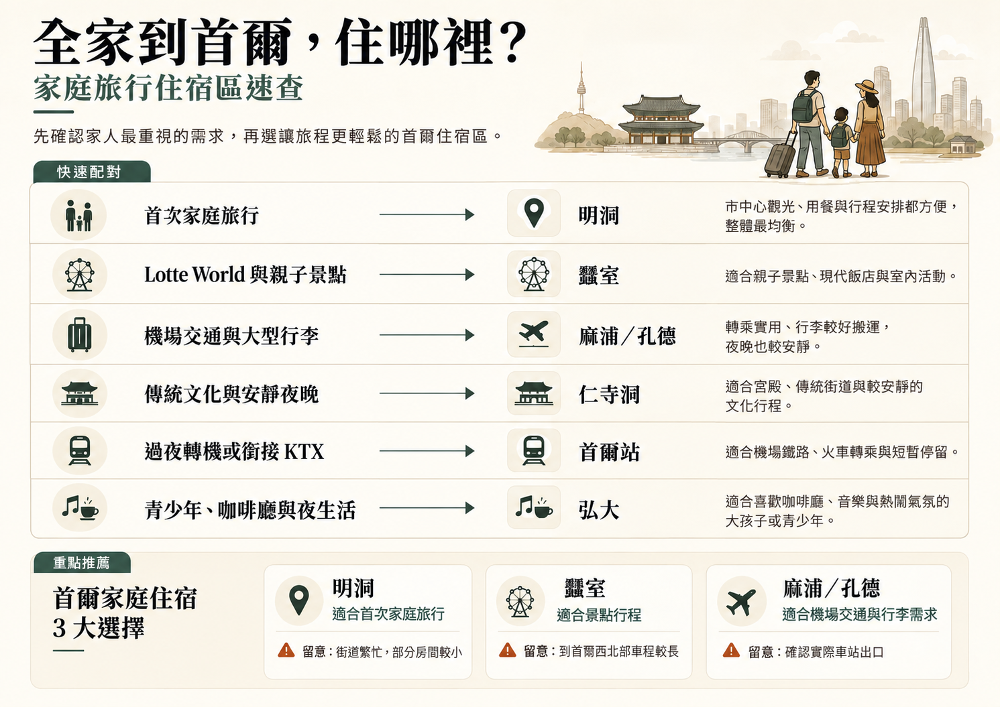

帶孩子，更需要能彈性調整的住宿區
帶孩子時，腿痠、天氣或比預期早回飯店，都可能改變計畫。地鐵路線簡單、附近好找吃的、最後一段路好走的街區，比只因靠近一個景點而選的飯店，更能保留全家彈性。
家庭常比預期更在意房間配置。如果稍高的每晚房價，能讓每人有合適床鋪、地板留得下行李箱，觀光一整天後也不覺得擁擠，就可能值得。
成人同時照顧孩子、嬰兒車與大行李箱時，機場往返感受會很不同。直達鐵路很有用，但轉乘次數、車站出口與最後走到飯店的路，可能同樣重要。
白天有趣的熱鬧街區，到了就寢時間可能很累。住在繁忙購物或夜生活區附近的家庭，通常選安靜支巷，比直接住在最熱鬧晚間活動上方更舒服。
對家庭有用的設施，常是實用而非奢華：電梯、洗衣、足夠床位、早餐選擇、行李寄放，以及多人共用一房時也能舒服使用的浴室。
有超市、便利商店、百貨公司與休閒餐廳的區域，能讓家庭晚間更容易安排。孩子累了、沒人想為了晚餐或日用品再搭地鐵時，尤其有幫助。
| 區域 | 適合需求 | 機場與行李 | 晚間氣氛 | 主要取捨 |
|---|---|---|---|---|
| 明洞 | 第一次家庭旅行 | 整體方便 | 繁忙但便利 | 客房偏小，觀光人潮多 |
| 蠶室 | Lotte World 與首爾東部 | 機場路程較長 | 現代、較安靜 | 離歷史市中心景點較遠 |
| 麻浦／孔德 | 機場交通與安靜住宿 | 很方便 | 日常生活感，熱鬧程度適中 | 附近主要景點較少 |
| 仁寺洞 | 文化與安靜夜晚 | 普通 | 安靜 | 部分街道較小 |
| 首爾站 | 重行李與鐵路旅行 | 非常方便 | 實用 | 街區氣氛較少 |
| 東大門 | 購物與彈性晚間安排 | 依飯店不同 | 深夜仍活躍 | 區域大，各處便利性差異明顯 |
| 弘大 | AREX、餐飲與活躍街區 | 靠近弘大入口站時很方便 | 熱鬧 | 夜生活街道較吵 |
| 江南 | 首爾南部行程 | 機場路程較長 | 繁忙都市感 | 到歷史景點交通時間較多 |


對許多第一次去首爾的家庭，明洞是最容易安排、各方面均衡的住宿區。吃飯、購物與市中心觀光容易串起，成人不用事先規劃每餐與每個晚間停留。
街區忙碌、以旅客為主，但帶孩子時，這份便利有幫助。房間可能偏小，所以家庭比起只看區名，更應注意實際床鋪配置與可用空間。
閱讀明洞指南 →
Lotte World、Seoul Sky、石村湖或首爾東南部其他景點，占行程很大一部分時，蠶室是容易安排的家庭選擇。寬闊道路、現代購物中心與大型室內設施，也能讓雨天或很熱的日子更容易帶孩子活動。
主要取捨是離宮殿與許多經典初訪景點較遠。只有一天蠶室行程的家庭，通常不必住這裡；但好幾天都集中在這一側，就實用得多。
閱讀蠶室指南 →
家庭想要安靜住宿，又有方便機場交通，麻浦與孔德很實用。孔德有直達 AREX 普通列車，周邊日常餐廳多，也沒有主要觀光區持續不斷的人潮。
取捨是知名景點不在飯店門外。觀光日通常要多搭地鐵；不過帶好幾個行李箱時，抵達與離開能明顯輕鬆些。
閱讀麻浦／孔德指南 →
喜歡宮殿、傳統街道與安靜晚間氣氛的家庭，仁寺洞很合適。景福宮、益善洞與幾個市中心歷史區相對容易抵達，街區通常也比弘大或主要夜生活區更早安靜下來。
部分飯店在小巷或舊街道裡，需要留意嬰兒車通行與出地鐵後最後一段路。比起深夜活動更重視文化的家庭，可能住得很自在。
閱讀仁寺洞指南 →
家庭帶好幾個大行李箱時，首爾站是最方便的區域之一。AREX、KTX 與多條地鐵線，能簡化機場接駁與鐵路行程，尤其旅程還會去首爾以外地區時。
交通實用性勝過街區氣氛。想飯店門外就有咖啡廳、晚間散步與景點，家庭可能更喜歡明洞；但抵達日、離開日與重行李移動，首爾站能減少不少壓力。
閱讀首爾站指南 →
家庭想購物、看東大門設計廣場，並方便前往市中心東側，可以考慮東大門。大型商場與較晚營業時間，也讓觀光超出預期時仍有彈性。
區域廣，實際地鐵站與街道不同，飯店便利性就差很多。訂房地圖距離短，不一定代表推嬰兒車或拖行李好走。
閱讀東大門指南 →
弘大也適合家庭，尤其重視直達 AREX 與多樣休閒餐廳時。白天容易把咖啡廳、購物與附近街區串起，不必事先排好每一站。
主要需留意最繁忙的夜生活街道，而不是整個弘大。喜歡首爾這一側的家庭，通常住得稍遠離最吵的晚間街區更舒服。
閱讀弘大指南 →
家庭行程已有漢江以南的診所、商務、購物或景點安排，江南就合理。現代設施與大型商業區很方便，也有許多適合較長住宿的飯店。
第一次家庭旅行若以宮殿、明洞與老城區為主，就較沒效率。帶孩子反覆跨城容易累，所以只有明確會在首爾南部活動好幾天時，這個位置才最合適。
閱讀江南指南 →標示可住三、四人的房間，不一定有四張合適的床。韓國飯店的入住人數規則與床鋪配置不同，標示最多人數要搭配實際房間配置閱讀。
對家庭，床型比房型名稱重要。一張雙人床加小沙發或地鋪，和兩張完整床鋪，放入行李後感受可能完全不同。
飯店販售好幾間同房型，不代表保證有連通房。確實需要內部相通房門的家庭，應確認飯店在指定日期能提供。
多數現代飯店有電梯，但街道、地鐵站與飯店入口之間仍可能有樓梯。推嬰兒車、孩子睡著，或帶大行李箱時很重要。
地圖上很近的車站，如果最近出口沒有電梯，可能不方便。推嬰兒車的家庭，抵達前先了解無障礙出口與飯店入口，住宿通常更順。
飯店早餐能簡化早晨，但附近有麵包店、咖啡廳、便利商店與休閒餐廳時，不是必需。價值取決於全家在飯店周邊吃飯有多容易。
長天數家庭旅行中，洗衣比訂房時想像更有用。住客洗衣間或附近自助洗衣店，能減少需要打包的衣物，帶年幼孩子尤其實用。
幾位家人共用一房時，浴室照片值得仔細看。淋浴配置、隱私與可用空間，會明顯影響忙碌的早晨。
只看站名，無法了解全部情況。坡道、大路口、地下通道與長出口，可能讓地圖上短短一段，變成帶孩子與行李時很累的步行。
深夜抵達的家庭，先知道櫃台主要服務時間後如何入住，以及附近是否還容易找到吃的，會很有幫助。長途國際飛行後尤其重要。
入住前或退房後可寄放行李，能讓第一天與最後一天輕鬆許多。飯店時間與機場或鐵路行程之間差好幾小時，尤其實用。
弘大、東大門與江南等大區域，包含差異很大的街道與車站入口。同區兩間飯店，可能讓每日行程完全不同。
家庭通常比情侶或獨旅者移動慢。住宿稍微方便些，就能為休息、突來天氣，以及只是想早點結束的孩子，多留一點空間。
街區確定後，找飯店容易許多。房間大小、床鋪配置、車站動線與前述家庭實用設施，通常比單看房價更值得比較。
明洞是許多首次家庭旅行中，各方面均衡、最容易安排的選擇。Lotte World 是行程重心時，蠶室更合適；機場交通、行李與安靜夜晚更重要時，麻浦／孔德尤其實用。
打算花不少時間在 Lotte World、Seoul Sky 或首爾東南部景點，蠶室特別適合家庭。街區現代、容易安排行程，但離歷史市中心較遠。
適合。明洞觀光、吃飯與購物方便，能減少每天需要事先安排的細節。家庭仍要留意房間大小，因為許多市中心飯店客房偏小。
弘大也適合家庭，尤其靠近弘大入口站、機場交通方便的飯店。孩子需要規律睡眠時，通常選遠離最熱鬧夜生活街道的飯店更合適。
帶好幾個大行李箱，首爾站與麻浦／孔德尤其實用。弘大飯店若靠近弘大入口站、步行路線簡單，也很方便。
弘大、孔德與首爾站有直達 AREX，機場交通特別容易掌握。其他區域透過機場巴士或計程車也可能方便，不必讓機場交通決定整趟住宿。
飯店車站路線簡單、家人能應付行李時，鐵路通常更划算。搭晚班機、帶嬰兒車或好幾個大包，或出站後步行不方便時，計程車可能值得多花錢。
喜歡宮殿、傳統街區與安靜夜晚的家庭，仁寺洞是不錯的選擇。主要需留意飯店最後一段進出路線，部分住宿在小巷裡，推嬰兒車或拖重行李較不方便。
全家行程已集中在漢江以南，江南很合適。第一次旅行若以宮殿、明洞與歷史市中心為主，通常會多出不必要的跨城移動。
入住人數、床鋪配置、實際可用空間、車站動線、電梯、行李寄放與周邊餐飲，都是很實用的資訊。對家庭而言，這些往往比飯店設施的小差異更重要。
靠近地鐵有用，但出口也重要。稍遠的電梯出口，推嬰兒車、帶行李時，可能比只有樓梯的近出口更容易使用。
首爾主要旅客區通常人多、交通連接佳，因此實際飯店街道、車站步行與深夜周邊情況，比單靠「最安全」標籤選區更重要。明洞的日常移動通常簡單，仍是初次家庭旅行容易安排的住宿區。
最低每晚房價，不一定代表家庭總住宿成本最低。位置困難可能增加計程車、交通時間與每天不便；稍貴的房間，可能有更多空間與更容易走的路線。